அஃக - தமிழின் சொற்றொகுப்பு
download
Android
- Download dictionary for Android (அஃக செயலி தரவிறக்க இதைச் சுடக்கவும்)
- Download Dictionaries
- Download Books
- Documentation
- Issues
Desktop/Windows
- Download dictionary for Windows
- Releases
- Documentation
- Issues
- நாட்காட்டி
- ஒருங்குறி மாற்றி
- Google input tools
Firefox Addon
Jquery plugins
- Tamil Calendar
மேற்கண்ட ஏதேனும் ஒரு மென்பொருளை தங்களின் தேவைக்கு ஏற்ப பயன்படுத்திக் கொள்ள முடியும்.
Windows
விண்டோசு பதிப்பு வழிகாட்டி
விண்டோசு பதிப்பை எவ்வாறு உபயோகிப்பது பற்றி இங்கு அறியலாம்.
பொருளடக்கம்
- விண்டோசு
- பதிவிறக்கம் செய்யும் முறை
- மென்பொருளைப் பயன்படுத்தும் முறை:
- 1.சொல் தேடல்
- 1.2.சொல்லெண் தேடல்
- 1.3.இலக்கியத் தேடல்
- 1.4.இலக்கியத் தேடல்
- 1.5.அசை, சீர், வாய்ப்பாடு
- 3.புதிய சொற்பொருள் விளக்கம்
- 4.வடமொழியாக்கம்
- 5.பிறமொழியாக்கம் வரையறை
- 6.வழுசேகரிப்பு கூறு
- 7.சொல் உருவாக்கி
- 8.நகல் எடுத்தல்
- 9.தமிழ் நாட்காட்டி
- பிரச்சனைகள்
- 1.விண்டோசு 10 - ன் Font பிரச்சனையைக்களைதல்
To Download see latest software Release Notes
பதிவிறக்கம் செய்யும் முறை
- ௧) நிலையான விண்டோசுப் பதிப்பை பதிவிறக்கம் செய்து கொள்ளவும். பதிவிறக்கப் பக்கத்திற்கு இந்த இணைப்பு கொண்டு செல்லும். அங்குள்ள Download என்னும் பொத்தானை அழுத்தவும்
- எங்கு சேமிக்க வேண்டுமோ அங்கு அந்தக் கோப்பை சேமித்துக் கொள்ளவும்.
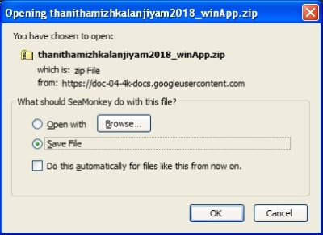
- நான் Downloads என்னும் கோப்புறைக்குள் செமிப்பதாகக் கொள்வோம்.
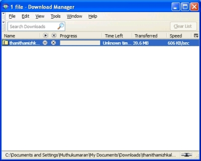
- ௨) பதிவிறக்கம் முடித்தவுடன் பதிவிறக்கம் செய்த Zip கோப்பை UnZip செய்து கொள்ளுங்கள்.
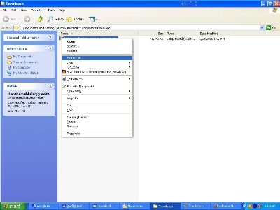
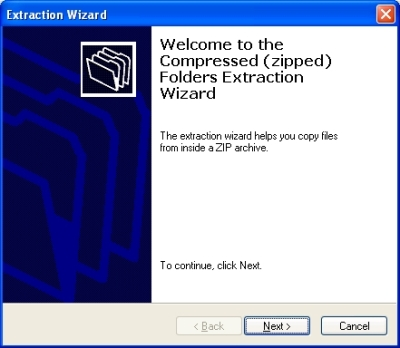
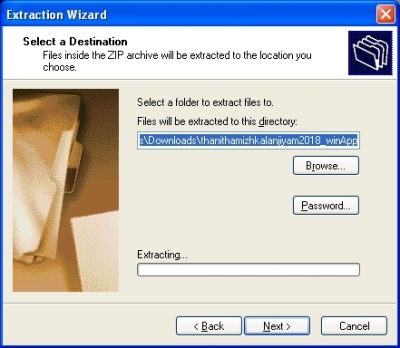
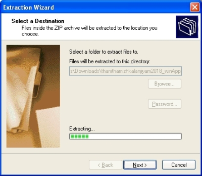
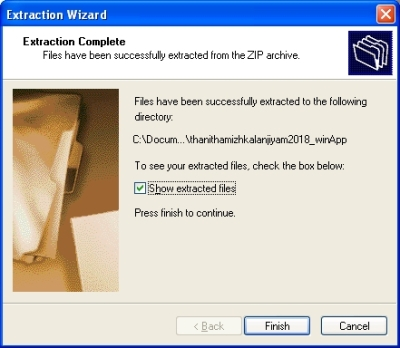
- ௩) பின்னர் TamDict2018V1.exe என்ற கோப்பை இயக்கவும்.
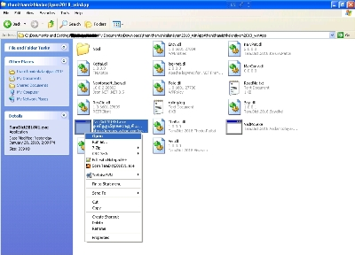
- வேண்டுமென்றால்இந்த மென்பொருளின் இணைப்பை Desktop’ல் உருவாக்கிக் கொள்ளலாம்.இம்மென்போருளை மறுபடியும் இயக்க இலகுவாக இருக்கும் அல்லவா.
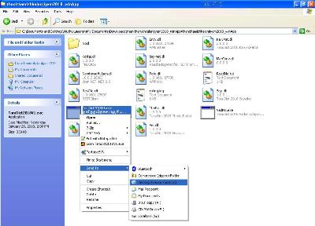
- Desktop’ல் இவ்வாறு வரும். அழுத்தினாலே இந்த மென்பொருள் இயங்க ஆரம்த்து விடும் அல்லவா?
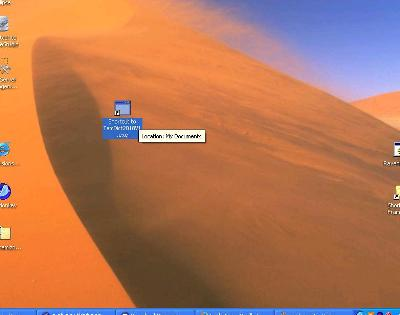
- ௪) தாங்கள் தேடும் சொல்லை உள்ளீடு கொடுத்து Search என்னும் பொத்தானை இயக்கவும். அதற்குரிய பொருள் பெட்டியில் காண்பிக்கப்படும்.
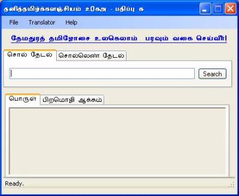
மென்பொருளைப் பயன்படுத்தும் முறை:
௧. சொல் தேடல்:
- தாங்கள் தேட விரும்பும் சொல்லை தேடுபட்டியில் இட்டு Search பொத்தானை அழுத்தினால் அச்சொல்லுக்குரிய பொருள் காண்பிக்கப்படும். இங்கு Tamil என்னும் சொல்லுக்குப் பொருள் தேடப்படுகின்றது.
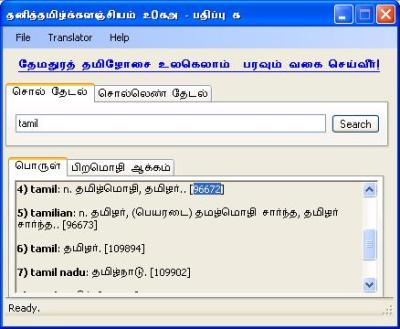
- ஒவ்வொரு சொல்லின் இறுதியிலும் ஒரு எண் கொடுக்கப்பட்டு இருக்கும் இந்த எண் மூலம் ஒரு சொல்லானது மிக எளிதாக அர்த்தம் காணப் படும். பிறரிடம் கூறவும் இந்த எண் உபயோகப்படும்.
௨. சொல்லெண் தேடல்:
- ஒரு சொல்லுக்குரிய எண்ணை வைத்து அந்தச் சொல்லைக் காண இது உபயோகம் செய்யப்படுகிறது. உதாரணமாக 96672 என்ற தேடினால் அது அந்த எண்ணுக்குரியப் பொருளைக் காண்பிக்கும்.
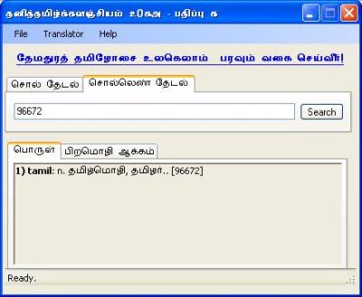
௩. இலக்கியத் தேடல்:
(பதிப்பு 2.8.6.2 முதல்)
- தமிழ் இலக்கியங்களில் ஒரு சொல் எந்த எந்த இடங்களில் இருக்கிறது என்பதைக் காணுதல். உதாரணமாக அகரம் என்ற தேடினால் அது அந்த சொல் தமிழ் இலக்கியங்களில் இடம்பெற்று இருக்கும் வரிகளைக் காண்பிக்கும்.
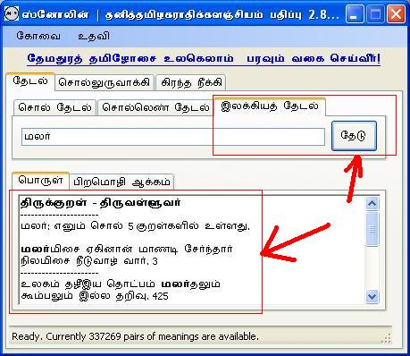
௩. புதிய சொற்பொருள் விளக்கம் மென்பொருளுடன் சேர்த்தல்:
- புதியச் சொற்களின் விளக்கங்கள் இசையினிக் குழுமத்தால் உருவாக்கப் படும் போது அவற்றை இந்த மென்பொருளுடன் சேர்த்துக் கொள்ள இந்த வசதி பயன்படுகிறது. இதனை அணுக File -> Definitions -> Import என்னும் Menu வழியாக செயல்படுத்த முடியும்.
௫. வடமொழியாக்கம்:
(பதிப்பு 2.8.2.* முதல்)
- Translator -> Vadamozhiyakkam என்னும் மெனு மூலம் கிரந்த எழுத்துகளுடன் கூடிய சொற்களை தனிதமிழிலில் மற்ற இந்த மென்பொருள் கூறு பயன்படுகிறது. கிரந்த எழுத்துக்களுடன் கூடிய சொல்லை மொழிமாற்றுப் பட்டியில் இட்டு மொழிமாற்று எனும் பொத்தானை அழுத்தினால் வடமொழி கிரந்த எழுத்த்டுகளுடன் கூடிய சொல்லை முடிந்தவரை நல்ல தமிழில் இந்த மென்பொருள் மாற்றித்தரும். பிழையாக மென்பொருள் மாற்றம் செய்தால் தயவு செய்து isaiyini@yahoogroups.com என்னும் முகவரிக்கு மின்னஞ்சல செய்யவும்.
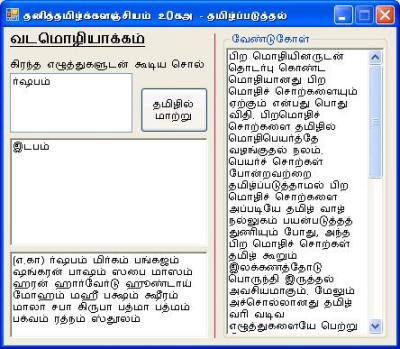
(பதிப்பு 2.8.3.* முதல்)
- Translator -> Vadamozhiyakkam என்னும் மெனு நீக்கம்.
- கிரந்த எழுத்து நீக்கி - என பெயர் மாற்றம்.
௬. பிறமொழியாக்கம் வரையறை:
பிறமொழிச் சொற்களை தமிழில் மாற்றும் வழிமுறைகள் நன்னூல் விதிப்படி சொல்தேடல் திரையில் கொடுக்கப்பட்டு உள்ளது, அவற்றைப் பயன்படுத்தி நீங்களே பிறமொழிச் சொற்களை தமிழ்ப்படுத்தி தமிழ் நல்லுகத்திற்கு வழங்கமுடியும்.

௭. வழுசேகரிப்பு கூறு:
(பதிப்பு 2.8.2.* முதல்)
௮. சொல் உருவாக்கி:
(பதிப்பு 2.8.3.* முதல்) முதல் மற்றும் ஈறு எழுத்துக்கள்
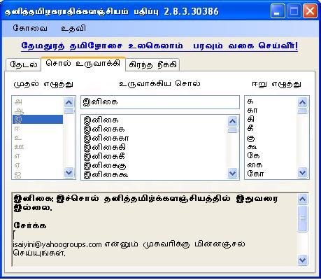
(பதிப்பு 2.8.4.* முதல்) தமிழில் இடை எழுத்துக்கள்
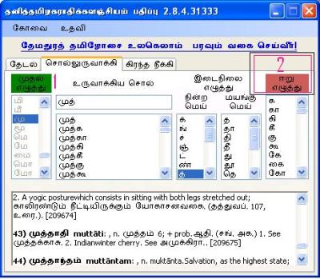
௭. நகல் எடுத்தல்:
(பதிப்பு 2.8.4.39617 முதல்)
பயனர் தகவல்உழவன் அவர்களின் பரிந்துரைப்படி இந்த வசதி செய்து தரப்படுள்ளது. பயனர்கள் சொல்லின் தேடல் முடிவுகளை நகல் எடுத்து மின்னஞ்சல் மூலமாக அல்லது, வலைப்பூவில் பதிந்து கொள்ளலாம்.
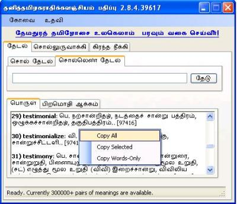
௯. தமிழ் நாட்காட்டி:
(பதிப்பு 2.8.6.* முதல்)
தமிழ் நாட்காட்டி தமிழ் மாதங்கள் மற்றும் தமிழ்ப் பொழுதுகள் அடிப்படையில் தமிழ் நாட்காட்டி உருவாக்கப் படுகிறது. இது ஒரு சோதனைப் பதிப்பு ஆகும். இதனை எவ்வாறு சோதனை செய்வது என்பது பற்றி இங்கு விரிவாகப் பார்க்கலாம்.
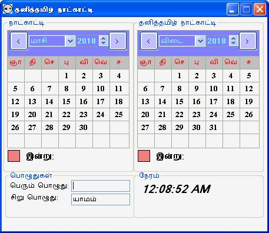
விண்டோசு 10 - ன் Font பிரச்சனையைக்களைதல்
(அனைத்துப் பதிப்புகளிலும்)
இந்தப் பிரச்சனை பயனர் தேமொழி அவர்களால் தரப்பட்டது. அதாவது இந்த மென்பொருளை Windows-10 இயங்கு தளத்தில் இயக்கிய போது Font பிரச்னை ஏற்படலாம். அதனை எவ்வாறு கையாளுவது? பின்வருமாறு உங்களது விண்டோசு இயங்குதளத்தில் தெரிந்தால்
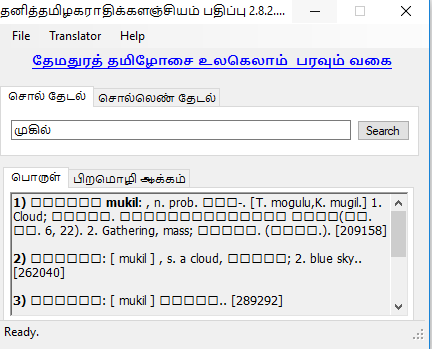
முதலில் Font லதா (Latha) இருக்கிறதா எனப்பாருங்கள் இல்லை என்றால் லதா Font சேர்த்த உடனே இந்தப் பிரச்னை தீர்ந்து விடும்.
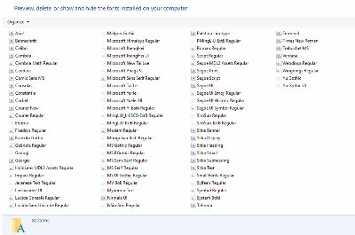
Hope Latha font is not at your Laptop-Win10. I checked ThaniThamizhakarathi software with and without Latha font at Win XP system. If without Latha font the application not displaying the letters. So i guess, maximum this Latha font is not at your laptop is the problem.
please install them by doing following steps.
For more details https://answers.microsoft.com/en-us/windows/forum/windows_10-files/installing-tamil-fonts-in-windows-10/ac5b087a-1b5d-463c-b3dd-1474a8c29ac5?auth=1
There is one of these optional features, “Supplemental Tamil Fonts”, that includes the Latha and Vijaya fonts.
You can fix your issue now either by adding Tamil language to your user language profile (if it’s not already included), or you can enable the optional feature manually. Both of these are done in Settings.
- Click the Start button.
- Click Settings.
To add the Tamil language to your language profile:
- In Settings, click Time & language.
- Click Region & language.
- If Tamil is not included in your languages, click the “+” icon next to Add a language. Scroll to find Tamil, then click on it to add it to your language list.Once you have added Tamil to your language list, then the optional Tamil font feature and other optional features for Tamil language support will be installed, provided you are online. This should only take a few minutes.
To manually add the optional Tamil fonts feature:
- In Settings, click System.
- Click Apps & features.
- Click on the link, Manage optional features.
- If “Tamil Supplemental Fonts” is not listed among the installed features, click on the “+” icon next to Add a feature. Scroll to find “Tamil Supplemental Fonts”. Click on that item, then click on Install. Click on the back arrow in the upper corner of the window.
You should see the Tamil feature in the list as installed or in the process of being installed.
Once done check the app and Please let me know the status of ThaniThamizhKalanjiyam App.
நன்றிகள் பல
Android
நிறுவல் முறை:
- உங்கள் கைப்பேசியில் அஃக ௨௮ - Download for Android என்ற Android செயலியை நிறுவிக் கொள்ளுங்கள்.
- முதலில் கீழே உள்ள பட்டியலில் இருந்து உங்களுக்கு பிடித்தமான தனித்ததமிழகராதிகள் அல்லது விக்சனரிஅகராதிகள் அல்லது நூல்களை Download செய்யவும்
- பின்னர் கைப்பேசிச் செயலி (அஃக *) யைப் பயன்படுத்துங்கள்.
தனித்த தமிழ் அகராதிகள் நிறுவல் முறை
தனித்த தமிழ் அகராதிகள்
என்னும் இணைப்பில் இருந்து நூல்களை தரவிறக்கிக் கொள்ளுங்கள். பின்னர் சொற்களைத் தேடுங்கள், அதற்குரிய பொருள் வரும்.
தமிழ் நூல்கள் படிக்கும் முறை
தமிழ் நூல்கள்
என்னும் இணைப்பில் இருந்து நூல்களை தரவிறக்கிக் கொள்ளுங்கள். பின்னர் அந்த “நூலின்பெயர்/” எனத் தேடவும், பொருளடக்கம் வரும், அதனைப் பயன்படுத்த ஆரம்பியுங்கள்.
விக்சனரி அகராதிகள் நிறுவல் முறை
விக்சனரி அகராதிகள்
என்னும் இணைப்பில் இருந்து நூல்களை தரவிறக்கிக் கொள்ளுங்கள். பின்னர் சொற்களைத் தேடுங்கள், அதற்குரிய பொருள் வரும்.
video
Speech on 18th Tamil internet conference about “Tamil New Word Creator”, “Grantha Remover” at Anna University, Chennai held at 2019 september 21.